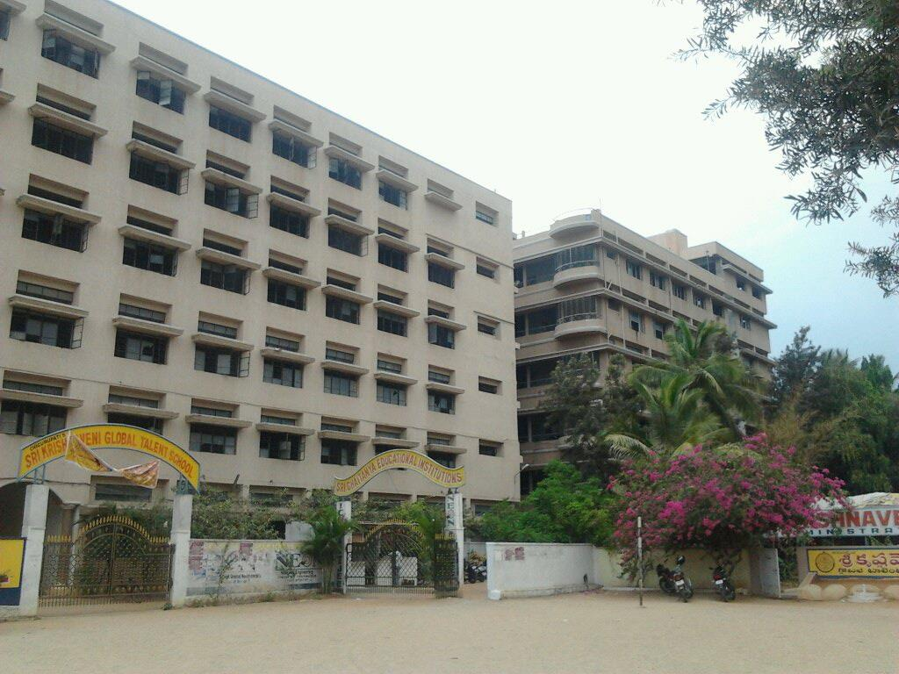

sri chaitanya junior college
V:Dilsukhnagar m:saroornagar D: RR pincode:500082
About us
Services
Fee Details
Busses
Contact Us
About college:
Sri Chaitanya girls Residential Junior College in Kothapet welcomes every student to an atmosphere that is conducive for knowledge enhancement.
Other than what is written in the prescribed books,
the teachers encourage students to explore more reference material so as to increase their knowledge.
Debates are also applauded as it makes way for better learning.
The classrooms and other activity spaces are neatly structured and feature the required furniture and other equipment which will help students study better.
The college functions through the week from 09:00 - 18:00. The 400+ votes that it has received only speaks volumes of the quality it delivers.
Fees can be paid by using Cash, Cheques. This listing is also listed in Colleges, Junior Colleges, Tutorials For Eamcet, College Co Education, Residential Colleges, Colleges For Bpc, Colleges For Mpc, Residential Junior Colleges.
Please scroll to the top for the address and contact details of Sri Chaitanya girls Residential Junior College at Kothapet, Hyderabad.
